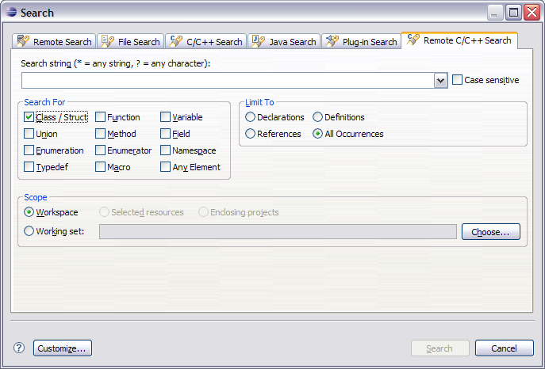

Search for C/C++ elements on remote servers
To search for C/C++ elements in your remote project:
- From the workbench menu, go to Search > Remote C/C++ .
- In the Remote C/C++ Search tab, specify the search string. Select the type of element, context and scope you are searching for.

- Click Search .
The matching C/C++ elements will be displayed in the Search view.